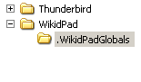
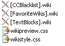

parent nodes: CommandLineSupport | HtmlCss | TextBlocks | WikidPadFiles
User Files
Contents:
Back
General
WikidPad supports a number of global user files for functions like:
These files can be found in the ".WikidPadGlobals" subdirectory of the Configuration directory.
 
Top
Cascading style sheets
For CSS this directory is the location for:userbase level wikistyle.css cascading style sheetuserbase level wikipreview.css cascading style sheet
Top
previous: Back
parents: CommandLineSupport, HtmlCss, TextBlocks, WikidPadFiles
[help.status: done]